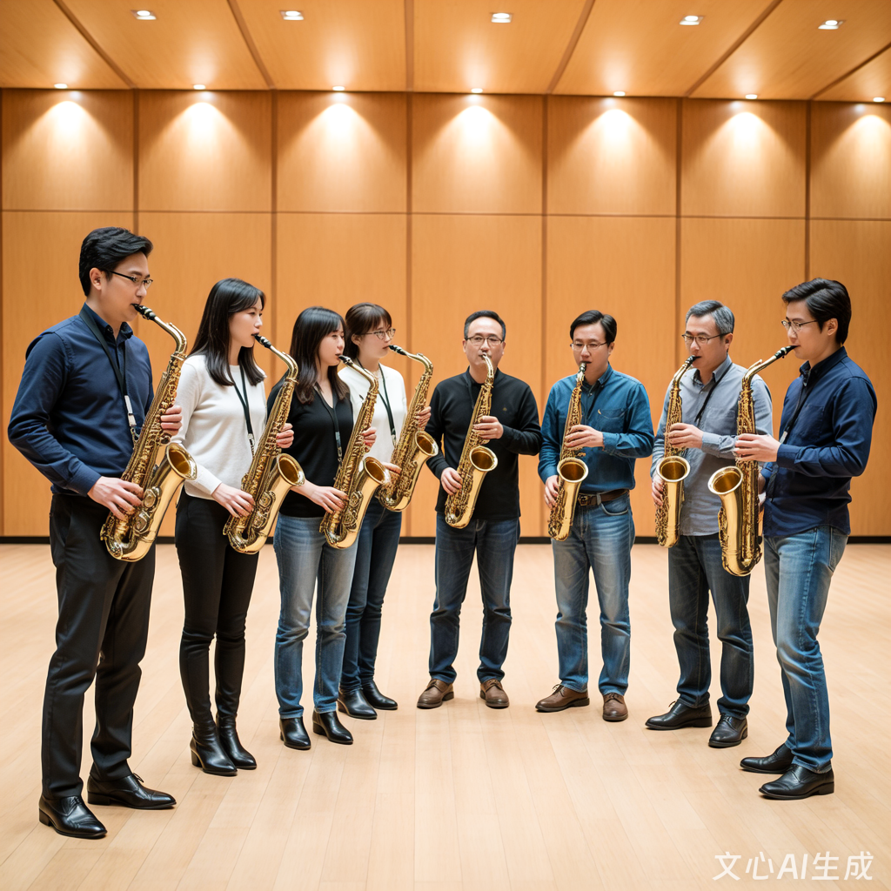

萨克斯社 社团简介
萨克斯社成立于2010年，是学校极具影响力的音乐类社团之一，十余年来始终以“传播萨克斯文化，搭建音乐交流平台”为宗旨，致力于为全校萨克斯爱好者提供学习、展示与交友的优质空间。社团现有注册社员150余人，涵盖大一至研究生各个年级，成员来自不同专业背景，却因对萨克斯的热爱汇聚一堂。无论是零基础的音乐小白，还是具备一定演奏经验的进阶玩家，都能在社团中找到属于自己的位置。
社团拥有专业的指导老师团队，包括省内知名萨克斯演奏家、音乐学院资深教师，定期为社员提供一对一辅导、集体授课和技巧 workshops。教学内容涵盖古典萨克斯曲目演绎、爵士风格即兴演奏、流行金曲改编等多个方向，同时注重乐理知识、气息控制、指法技巧等基础能力的培养。社团配备专属排练厅，内置多支不同调性的萨克斯乐器（高音、中音、次中音）、专业音响设备和乐谱库，为社员日常练习和排练提供充足保障。
除常规教学外，社团积极搭建展示平台，每年举办“萨克斯之夜”专场音乐会、校园快闪表演、音乐沙龙等活动，让社员在实践中提升演奏水平，增强自信心。同时，社团与校外多家音乐机构、其他高校萨克斯社团建立长期合作关系，定期组织交流演出、联合排练、大师课等活动，拓宽社员的音乐视野。十余年来，社团培养了数百名萨克斯爱好者，部分毕业生凭借在社团积累的演奏技能和舞台经验，在音乐行业、文艺团体等领域发光发热，更有多名社员在省级、国家级音乐比赛中斩获佳绩。
萨克斯社不仅是一个音乐社团，更是一个温暖的大家庭。在这里，社员们一起排练、一起演出、一起分享音乐的喜悦，结下了深厚的友谊。社团定期组织团建活动，如户外野餐、音乐露营、节日联欢会等，让大家在紧张的学习之余放松身心，感受集体的温暖。无论你是想学习一门新乐器、提升演奏技巧，还是想认识志同道合的朋友、丰富校园生活，萨克斯社都将是你最理想的选择。我们相信，每一个热爱音乐的灵魂都能在萨克斯的旋律中找到共鸣，每一次演奏都能绽放独特的光彩。加入我们，让悠扬的萨克斯声伴随你的校园时光，书写属于你的音乐故事！
风采展示
以下是萨克斯社日常排练及演出的精彩瞬间，点击图片可查看详细活动介绍：

社团成员在“校园文化艺术节”中的合奏表演获得全校师生一致好评，经典曲目《回家》《茉莉花》的萨克斯改编版更是成为校园内广为流传的旋律。在去年的校际交流活动中，社团骨干与省内多所高校的萨克斯爱好者共同演绎的《蓝色狂想曲》，展现了当代大学生的音乐素养与青春风采。
社团视频展示
社员故事（节选）
我叫林晓，是一名大二的新闻专业学生，加入萨克斯社纯属一次偶然的机会。大一刚入学时，我对大学生活充满迷茫，看着身边同学纷纷加入各种社团，我却不知道自己真正喜欢什么。一次校园文化节上，我偶然听到了萨克斯社的专场演出，当那悠扬、深情的旋律在音乐厅中响起时，我瞬间被深深吸引了。那是我第一次近距离感受萨克斯的魅力，一曲《月亮代表我的心》让我热泪盈眶，也让我萌生了学习萨克斯的念头。
加入社团时，我完全是零基础，连萨克斯的基本构造都不了解，甚至吹不出一个完整的音符。刚开始练习时，气息控制不好，吹出来的声音刺耳又难听，我一度想要放弃。但社团的学长学姐们非常耐心，他们从最基础的气息练习、指法教学开始，一步步引导我入门。指导老师也经常鼓励我，告诉我“每一个优秀的演奏者都是从笨拙的练习开始的”。在社团的排练厅里，我每天坚持练习两个小时，虽然过程很枯燥，但每当我能完整吹出一首简单的曲目时，那种成就感是无法用言语形容的。
在社团的一年多时间里，我不仅学会了演奏十余首经典曲目，更收获了珍贵的友谊和成长。记得第一次参加校园快闪活动时，我紧张得手心冒汗，甚至忘记了部分指法。是身边的社员们用眼神鼓励我，和我一起完成了表演。那次经历让我变得更加自信，也让我感受到了社团的温暖与力量。现在的我，不仅能在社团的音乐沙龙中自信地独奏，还能和社员们一起合奏复杂的曲目。萨克斯已经成为我生活中不可或缺的一部分，每当我学习压力大、心情烦躁时，吹一吹萨克斯，悠扬的旋律就能让我平静下来。
社团的生活也让我认识了一群志同道合的朋友。我们一起在排练厅熬夜排练，一起为了音乐会的成功举办而努力，一起在团建活动中分享喜怒哀乐。记得去年圣诞节，我们在校园里举办了一场小型的音乐派对，用萨克斯为同学们演奏圣诞歌曲，收到了大家的热烈欢迎。那种用音乐传递快乐、分享美好的感觉，让我深深体会到了社团的意义。现在，我已经成为社团的骨干成员，负责指导新社员入门。看着新社员们像当初的我一样，从零基础开始慢慢进步，我感到非常欣慰。
萨克斯社不仅教会了我一门乐器，更让我学会了坚持、合作与分享。在这里，我找到了自己的兴趣所在，也找到了属于自己的青春舞台。我相信，无论未来我走到哪里，萨克斯的旋律都会伴随我，社团的友谊都会温暖我。如果你也热爱音乐，如果你也想学习一门有趣的乐器，如果你也想认识一群志同道合的朋友，那就加入萨克斯社吧！这里有专业的指导、温暖的集体、广阔的舞台，等待着你绽放属于自己的光彩。